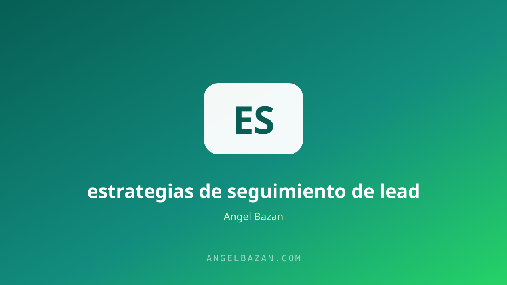

Estrategias de seguimiento de leads que convierten en ventas
La mayoría de las ventas no se pierde por falta de interés, sino por falta de seguimiento. Así conviertes a tus leads en clientes.
En este artículo
Tú captaste el lead: llenó el formulario, escribió a tu WhatsApp o comentó en tu publicación. Ahí es donde la mayoría de los negocios se detiene y donde la mayoría de las ventas se pierde. El 80% de las ventas requiere de 5 a 12 contactos, y casi nadie los hace.

El seguimiento no es insistir: es acompañar la decisión. Cada mensaje bien hecho, enviado en el momento correcto y con el tono correcto acerca al lead un paso más al cierre. En esta guía verás los tiempos, los mensajes y las herramientas para convertir el seguimiento en ventas.
Por qué el 80% de las ventas muere en el seguimiento
Cuando un lead llega y no recibe respuesta rápida, su interés se enfría y su atención migra a la competencia. Además, la mayoría de los leads no está listo para comprar al primer contacto: necesita información, confianza y comparación. El seguimiento existe para acompañar ese proceso, no para molestar.
El embudo donde encaja cada contacto lo tienes en cómo crear un funnel de WhatsApp desde cero.
El dato más ignorado: la mayoría de los leads que no responden no están perdidos, están distraídos. Un seguimiento espaciado y con valor los devuelve a tu oferta en el momento en que el problema vuelve a aparecer.
Los tiempos que sí funcionan
- Primera respuesta en menos de 5 minutos: la ventana de oro; un bot responde al instante y el humano continúa.
- Primer seguimiento a las 24 horas: si no respondieron, un recordatorio con valor, no un "¿qué pasó?".
- Segundo contacto a los 3 días: comparte un caso o recurso que resuelva su objeción.
- Tercero a la semana: una última pregunta honesta antes de bajar el tono.
La respuesta inmediata la resuelve un bot con IA en WhatsApp, que atiende a cualquier hora sin fila de espera.
La secuencia por WhatsApp que convierte
Mensaje 1: confirma el interés y presenta el beneficio principal. Mensaje 2: entrega un caso real o un resultado medible. Mensaje 3: aborda la objeción más común. Mensaje 4: presenta la oferta con su plazo concreto. Mensaje 5: cierre directo con un CTA claro. Cada mensaje suma valor antes de pedir algo.
Una regla simple para cada mensaje: una sola idea, un solo objetivo. Si el mensaje intenta presentar el producto, responder dudas y cerrar al mismo tiempo, confunde y pierde respuesta.
Para que no se te escape ningún contacto, usa nuestro generador de secuencias de seguimiento y arma la conversación completa con el guion para tu bot.
Seguimiento con IA: el bot que no espanta
La IA permite responder en segundos, a cualquier hora y con tono humano. El bot califica al lead (frío, tibio o caliente), responde las preguntas frecuentes y deriva a un humano cuando detecta intención de compra. El resultado: ningún lead queda sin atender y tu equipo solo habla con quien está listo.
El bot no reemplaza el criterio: etiqueta al lead, registra la conversación y te deja el contexto listo cuando entras a hablar. Así el humano llega sabiendo qué preguntó, qué objetó y cuánto interés mostró.
Qué decir (y qué evitar) en cada mensaje
- Evita el "¿Hola, me leíste?" sin aportar valor.
- Evita enviar el mismo mensaje a todos sin contexto.
- Evita la presión en el primer contacto.
- Empieza por el nombre y el problema que planteó.
- Entrega un dato, un caso o un recurso útil.
- Termina con una pregunta abierta o una oferta con plazo.
El embudo que sostiene cada contacto se construye como lo vemos en cómo crear un embudo de ventas.
Qué métricas medir
- Tasa de respuesta: cuántos leads reaccionan a tu primer mensaje.
- Tasa de conversación a venta: cuántas conversaciones terminan en cierre.
- Mensajes por venta: cuántos contactos necesita tu cliente promedio.
- Costo por lead y costo por venta: la rentabilidad real del proceso.
Revisa estas métricas cada semana y ajusta el mensaje, no el volumen: el mismo lead respondido con mejor copy convierte más que mil mensajes nuevos a contactos fríos.
El negocio que domina la conversación y el cierre es el mismo que ves en cómo ganar dinero por WhatsApp.
Preguntas frecuentes
¿El seguimiento espanta a los leads? Solo cuando no aporta valor. Con mensajes útiles y espaciados, la percepción es de interés, no de acoso.
¿Cuántos mensajes debo enviar? Entre 5 y 12 contactos distribuidos en 2-4 semanas, variando el canal y el mensaje.
¿Puedo automatizarlo todo? El primer contacto y la calificación sí; el cierre de tickets medios y altos funciona mejor con un humano que retome la conversación.

Angel Bazán
Especialista en funnels, Meta Ads y WhatsApp + IA. Ayudo a negocios a vender más combinando tráfico pagado con conversaciones automatizadas.
Conoce más sobre mí →Aprende a crear y vender productos digitales con Meta Ads, WhatsApp e IA
Clases en vivo, estrategias y recursos para construir tu sistema desde cero. 🚀
Únete gratis al grupo